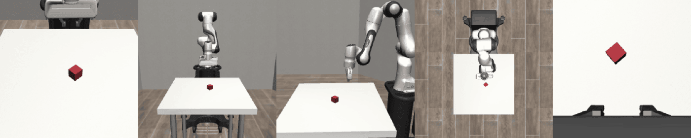

Same 7B vision-language-action backbone, two very different ways of turning a camera frame into a robot command — run and recorded on this machine. OpenVLA is a 7-billion-parameter VLA trained across ~970k robot episodes from Open X-Embodiment; it acts by autoregressively generating discretized action tokens, one at a time, the same way an LLM writes text. OpenVLA-OFT ("Optimized Fine-Tuning") keeps that same backbone but replaces the output head: it predicts a whole chunk of continuous actions in one parallel forward pass instead of seven sequential ones.
OpenVLA is built on a Prismatic vision-language backbone: a frame from the robot's camera
is encoded by two fused vision towers, DINOv2 and SigLIP, and projected into the token stream of a
7B-parameter Llama 2 language model alongside the tokenized instruction — e.g.
"In: what action should the robot take to pick up the red cube?"
The model was never trained to output text back. Instead, its 7-dimensional continuous action — delta position (x, y, z), delta rotation (roll, pitch, yaw), and gripper open/close — is discretized into 256 bins per dimension, and each bin is mapped onto one of the least-used tokens in the LLM's existing vocabulary. Producing an action means generating 7 of these tokens the same way the model would generate 7 words: one forward pass through the full 7B network per token, each token conditioned on the ones before it.
That autoregressive loop is what makes OpenVLA a strong generalist — it inherits the flexibility of an LLM decoder — and also what makes it slow: 7 sequential 7B forward passes for a single timestep of control, then the whole thing repeats for the next camera frame.
OpenVLA-OFT is not a new pretrained model — it's a fine-tuning recipe applied to the same OpenVLA backbone, aimed squarely at the two things that make the original hard to deploy: it's slow, and discretizing continuous motion into 256 bins throws away precision the base model never gets back.
| Property | OpenVLA | OpenVLA-OFT |
|---|---|---|
| Action decoding | Autoregressive — 7 tokens, sequentially | Parallel — one non-causal forward pass |
| Action representation | 256-bin discretized tokens | Continuous, via L1 regression (or diffusion) head |
| Actions per query | 1 timestep | A chunk of several future timesteps at once |
| Language grounding | Token-level cross-attention only | + FiLM conditioning injected into vision features |
| Ships zero-shot? | Yes — generalist across many robots | No — needs fine-tuning per robot/task setup |
| Typical control rate | Roughly a few Hz | Reported ~25× higher throughput; real-time on real arms |
| LIBERO avg. success* | Autoregressive fine-tune, mid-70s% | ~97% across all four LIBERO suites |
* Figures as reported in the OpenVLA and OpenVLA-OFT papers, for context — not this run. This run's own numbers are in the Results section below.
Two separate setups on this machine, evaluating the two ends of the table above:
| OpenVLA (zero-shot) | OpenVLA-OFT (fine-tuned) | |
|---|---|---|
| Checkpoint | openvla/openvla-7b | moojink/openvla-7b-oft-finetuned-libero-spatial |
| Sim / task | robosuite — Lift (pick up the red cube) | LIBERO-Spatial — 10 pick-and-place tasks |
| Action un-normalization | bridge_orig stats (nearest available match — not sim-specific) | Trained specifically for this suite |
| Episodes run | 4 (this reel) | 30 (all 10 tasks × 3) |
| Project | agenticVLA/demo.py | openvla-oft / run_libero_eval.py |
These are two different simulators, two different task families, and OpenVLA never saw LIBERO or robosuite during training — it's improvising with the closest action statistics available (BridgeV2). The comparison below is honest about that: it's "generalist zero-shot" vs. "specialist fine-tuned," which is exactly the trade-off Section 2 describes, not a controlled ablation on one task.
No policy, a generalist policy outside its depth, and a policy fine-tuned for exactly this task:

Lift environment used for the OpenVLA zero-shot runs above. Only agentview is fed to the model; the rest are recorded for human inspection.Four individual episodes pulled from the full 30-episode run, including the one failure recorded — nothing cherry-picked out.